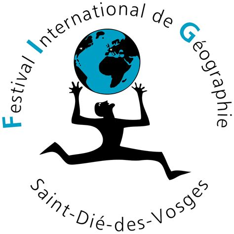
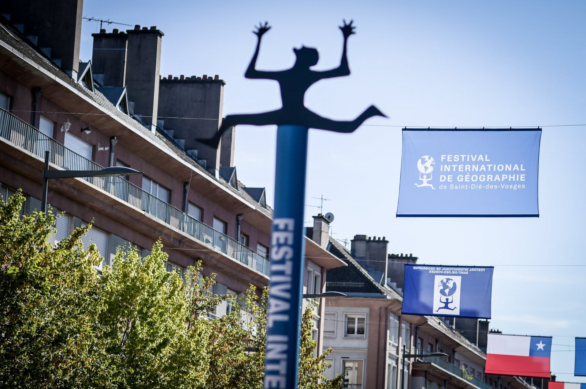

Au cours de mon stage de deuxième année à l'ADFIG (Association pour le Développement du FIG) à Saint-Dié-des-Vosges, j'ai été confronté à une mission stimulante : la refonte complète de leur site web existant, initialement construit sur le CMS Joomla. Mon engagement consistait à repenser intégralement la plateforme, en accordant une attention particulière à la conception graphique et à la réorganisation de sa structure interne. L'ADFIG, célèbre pour son évènement annuel consacré à la géographie, nécessitait une présence en ligne à la hauteur de son prestige.


Mon rôle a impliqué la migration habile du site vers WordPress, une plateforme offrant davantage de flexibilité et d'accessibilité. Au-delà de la transition technique, j'ai entrepris la reconstruction esthétique du site, veillant à ce qu'il reflète de manière moderne l'identité visuelle distinctive de l'ADFIG. Cette expérience enrichissante m'a permis de développer des compétences approfondies en gestion de projet web et de mettre en pratique mes connaissances acquises au cours de ma formation.